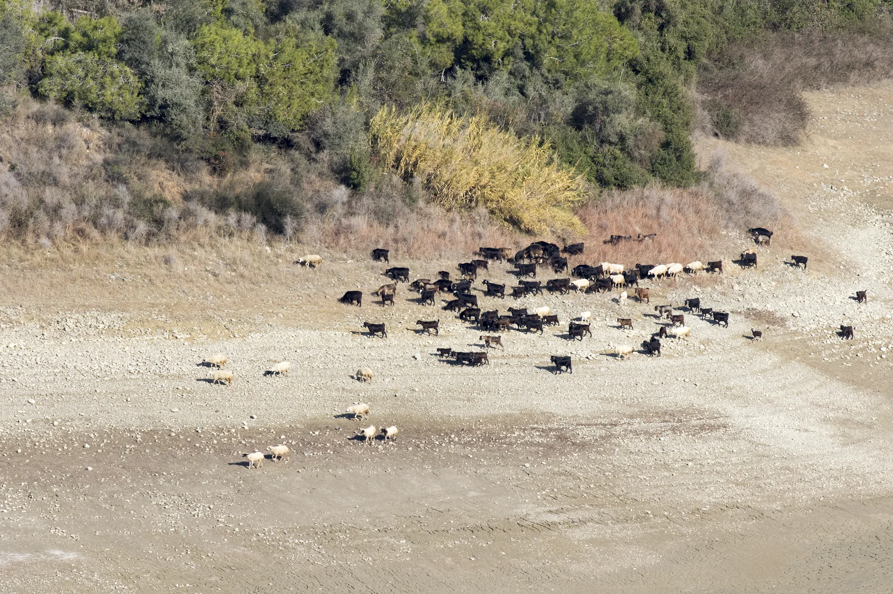
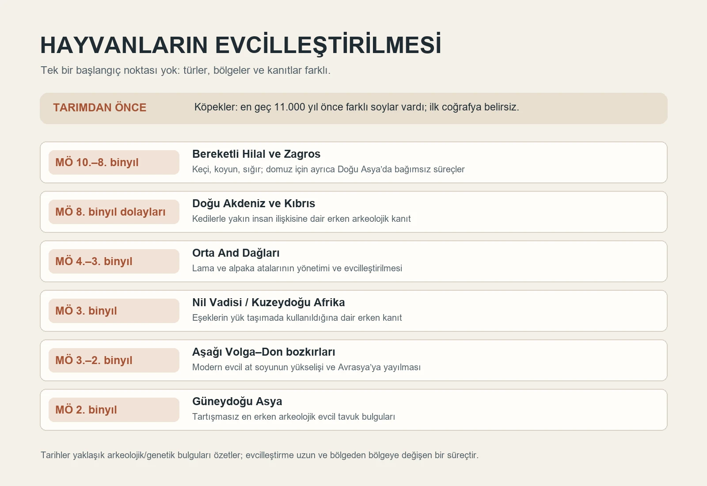

Hayvanların evcilleştirilmesi bir günde, tek bir yerde yaşanmadı. Köpekler tarım toplumlarından önce insanlarla yakınlaşmış olabilir; keçi, koyun, sığır ve domuzların yönetimi ise Güneybatı Asya'nın farklı Neolitik topluluklarında gelişti. At, eşek, tavuk ve And develerinin süreçleri daha sonra, başka coğrafyalarda belgelendi. “İlk evcil hayvan hangisiydi?” sorusunun yanıtı bile evcilleştirme tanımına ve elimizdeki kanıt türüne bağlıdır.[1]
Önce kavram: ehlileştirme mi, evcilleştirme mi?
Tek bir hayvanın insanlara alışması ehlileştirmedir; evcilleştirme ise bir popülasyonun nesiller boyunca insanlarla kurduğu ilişkinin değişmesi ve insanların üreme, beslenme ya da hareket üzerinde etkili olmasıdır. Avcıların yavru bir hayvanı büyütmesi tek başına türün evcilleştirildiğini kanıtlamaz. Arkeologlar kemiklerin yaş ve cinsiyet dağılımını, vücut ölçülerindeki değişimi, yerleşim içindeki kalıntıları ve bunların tarihini birlikte değerlendirir. Genetik araştırmalar da evcil soyların geçmişteki akrabalıklarını ve zaman içindeki karışımlarını izlemeye yardımcı olur.[1]
Hangi hayvan, nerede ve yaklaşık ne zaman?
| Tür | Coğrafya ve yaklaşık dönem | Topluluk / bulgu | Yayılma ve önemli ayrım |
|---|---|---|---|
| Köpek | Başlangıç yeri kesin değil; en geç 11.000 yıl önce Avrasya'da farklı soylar vardı. | Geç Pleistosen avcı-toplayıcılarıyla kurulan erken ilişki; genetik veriler en az beş büyük köpek soyunun 11.000 yıl önce ayrıştığını gösteriyor. | İnsan topluluklarının hareketleriyle tarımdan önce geniş alanlara yayıldı. Kesin başlangıç merkezi hâlâ tartışmalı.[6] |
| Keçi | Batı İran'daki Zagros Dağları; yaklaşık 10.000 kalibre yıl önce, kabaca MÖ 8000. | Erken Neolitik köy toplulukları. Kemiklerde genç erkeklerin seçici avlanmasından sürü yönetimine geçişin izi görülür. | Yakın Doğu'daki hayvancılık ve çiftçilik ağlarıyla Anadolu'ya, Avrupa'ya ve başka bölgelere taşındı.[3] |
| Koyun | Bereketli Hilal'in farklı kesimleri; erken Neolitik dönem, yaklaşık MÖ 9000–8000. | Güneybatı Asya'daki çiftçi ve çoban toplulukları. İlk sürü yönetimi ile evcil biçimin kemiklerde ayırt edilmesi arasında zaman farkı olabilir. | Hayvan sürüleri, tarımın ve yerleşik yaşamın yayılması sırasında batıya ve doğuya taşındı; süreç tek bir köye indirgenemez.[2] |
| Sığır | Güneybatı Asya'da yaklaşık MÖ 9. binyıl; evcil sığır soyunun erken odağı Bereketli Hilal'dir. | Erken Neolitik tarım toplulukları; evcil sığırların atası olan yaban öküzü, bölgedeki insanlarla uzun süre etkileşim içindeydi. | Sığırlar çiftçi göçleriyle Avrupa'ya yayıldı. Güney Asya zebu sığırlarının genetik geçmişi ayrı bir evcilleştirme hattına işaret eder.[5][13] |
| Domuz | Güneybatı Asya ve Çin'de birbirinden bağımsız süreçler; yaklaşık MÖ 9.–8. binyıllar. | Her iki bölgede de yerleşik üretim yapan erken çiftçi toplulukları; yaban domuzlarıyla yakın temas ve yönetim izleri. | Avrupa'daki evcil domuz soyları yerel yaban domuzlarıyla karıştı. Bu nedenle genetik geçmiş, tek yönlü bir göçten daha karmaşıktır.[4] |
| Kedi | Yakın Doğu'da erken insan-kedi ilişkisi; Kıbrıs'ta yaklaşık MÖ 7500'e tarihlenen önemli bir mezar buluntusu. | Kıbrıs'taki Neolitik yerleşimlerde insanlar ve kediler birlikte görülür. Bir mezara konmuş kedi, ilişkinin kanıtıdır; evcilleştirmenin tam başlangıç yeri olduğunu tek başına kanıtlamaz. | Kediler tarım yerleşimlerindeki kemirgenlerle beslenerek insan çevresine yaklaşmış olabilir; deniz ve kara ticaretiyle yeni bölgelere taşındılar.[7] |
| Lama ve alpaka | Orta And Dağları; yaklaşık 6000–5000 yıl önce, kabaca MÖ 4000–3000. | And yüksek bölgelerindeki avcı-toplayıcı ve erken hayvancı topluluklar, devegillerin hareket ve üremesini yönetmeye başladı. | Lama ve alpaka sürüleri And toplumlarında et, yün ve yük taşımaya hizmet etti; bunların yönetim ve evcilleştirilme tarihleri tek bir ana bağlanamaz.[8] |
| At | Modern evcil at soyunun güçlü biçimde izlenebildiği kaynak alan, Batı Avrasya bozkırlarının aşağı Volga–Don bölgesidir. | Bozkır toplulukları; modern evcil at soyunun hızlı yayılışı yaklaşık MÖ 2200'den itibaren belirginleşir. | Atlar kısa sürede Avrasya'ya yayıldı ve ulaşımı dönüştürdü. Botai'deki daha eski at kullanımı, bugünkü evcil at soyunun doğrudan kökeniyle aynı şey değildir.[10][11] |
| Eşek | Kuzeydoğu Afrika ve Nil Vadisi; MÖ 3. binyılda yük taşıma kanıtları. | Abydos'ta yaklaşık 5000 yıllık eşek iskeletlerinde yük taşımayla uyumlu izler bulundu. Evcilleştirme sürecinin o sırada tamamlanmış olduğu varsayılmamalı. | Çöl ve kurak bölgelerde yük taşımaya elverişli eşekler, Kuzey Afrika ve Yakın Doğu'daki ticaret ağlarıyla yayıldı.[9] |
| Tavuk | Güneydoğu Asya anakarası; Ban Non Wat'ta tartışmasız erken evcil tavuklar yaklaşık MÖ 1650–1250. | Bugünkü Tayland'daki yerleşik topluluklar. Pirinç tarımı ve orman açıklıkları, yabani kızıl orman tavuklarıyla teması artırmış olabilir. | Geç 2. binyılda Güney Asya, Çin ve Mezopotamya'ya; yaklaşık MÖ 800'de Akdeniz ve Avrupa'ya ulaştı.[12] |

Bu süreçler nasıl yayıldı?
İnsanlar hayvanları yalnızca “evcilleştirme fikri”ni başka topluluklara anlatarak yaymadı. Çiftçi ve çoban aileleri göç ederken sürülerini yanlarında götürdü; ticaret ve armağan değişimi hayvanları uzak yerleşimlere taşıdı; komşu topluluklar yeni türleri benimseyip kendi çevrelerine uyarladı. Güneybatı Asya'dan Avrupa'ya yayılan Neolitik yaşam biçimi bu hareketlerin önemli örneklerinden biridir. Ancak her bölgede aynı hayvanlar aynı hızla kabul görmedi; yerel avcılık gelenekleri ve iklim koşulları sonucu değiştirdi.[2]
Yayılma sırasında hayvanlar yerel yaban popülasyonlarıyla çiftleşebildi. Avrupa domuzlarının genetik geçmişinde bunun açık izleri vardır; sığır ve köpek soyları da tarih boyunca farklı toplulukların hareketleriyle karışmıştır. Dolayısıyla bugünkü evcil ırkların haritasını geçmişe aynen yansıtmak veya her tür için tek bir saf “köken sürüsü” aramak yanıltıcıdır.[4][5][6]
Kanıtlar bize neyi söyler, neyi söylemez?
Bir arkeolojik alanda hayvan kemiği bulunması, hayvanın orada evcil olduğunu tek başına göstermez: kemik avlanmış, ticaretle gelmiş veya yabani hayvana ait olabilir. Yaş ve cinsiyet seçimi sürü yönetimine işaret edebilir; vücut ölçülerindeki değişiklik, yerleşimdeki bağlam ve genetik veriler tabloyu güçlendirir. Buna rağmen “evcilleştirmenin başladığı yıl” gibi kesin bir tarih çoğu zaman mümkün değildir.
Ayrıca “hangi topluluk?” sorusuna, tarihöncesi insanlara bugün kullanılan ulusal ya da etnik kimlikleri atayarak yanıt veremeyiz. Bu yazıda “Zagros'un erken Neolitik köy toplulukları”, “Abydos çevresindeki Eski Mısır toplulukları” veya “Ban Non Wat yerleşimi” gibi arkeolojik tanımlar kullanılıyor. Bunlar, kazı ve tarihleme bağlamını anlatır; o insanların kendilerine verdikleri adları bildiğimiz anlamına gelmez.
Genel tablo yine de açık: hayvancılık tek bir icat veya tek yönlü bir yayılma değildi. İnsanlarla hayvanlar arasındaki ilişkiler, avcılık ve karşılıklı yakınlıktan sürü yönetimine, oradan da farklı amaçlarla yetiştirilen evcil popülasyonlara uzanan uzun bir tarih oluşturdu. Köpeklerin insanlarla ilişkisine ve kedilerin evcilleştirilme sürecine dair yazılarımızda iki örneği daha ayrıntılı inceleyebilirsiniz.
Kaynaklar
- Greger Larson ve Dorian Q. Fuller, “The Evolution of Animal Domestication”, Annual Review of Ecology, Evolution, and Systematics, 45, 2014, s. 115–136. Evcilleştirmenin tanımı ve çoklu başlangıç süreçleri üzerine derleme.
- Melinda A. Zeder, “Domestication and early agriculture in the Mediterranean Basin: Origins, diffusion, and impact”, PNAS, 105(33), 2008, s. 11597–11604. Farklı türlerin farklı bölgelerde yönetilmeye başlaması ve hayvancılığın Akdeniz'e yayılışı.
- Melinda A. Zeder ve Brian Hesse, “The Initial Domestication of Goats (Capra hircus) in the Zagros Mountains 10,000 Years Ago”, Science, 287(5461), 2000, s. 2254–2257.
- Greger Larson ve diğerleri, “Worldwide Phylogeography of Wild Boar Reveals Multiple Centres of Pig Domestication”, Science, 307(5717), 2005, s. 1618–1621.
- Amelie Scheu ve diğerleri, “The genetic prehistory of domesticated cattle from their origin to the spread across Europe”, BMC Genetics, 16, 2015.
- Anders Bergström ve diğerleri, “Origins and genetic legacy of prehistoric dogs”, Science, 370(6516), 2020, s. 557–564.
- Jean-Denis Vigne ve diğerleri, “Early Taming of the Cat in Cyprus”, Science, 304(5668), 2004, s. 259.
- Hugo D. Yacobaccio ve Bibiana L. Vilá, “The domestication of South American camelids: a review”, Animal Frontiers, 11(3), 2021, s. 43–51. And develerinin evcilleştirilme sürecine ilişkin derleme.
- Cecilia Rossel ve diğerleri, “Domestication of the donkey: Timing, processes, and indicators”, PNAS, 105(10), 2008, s. 3715–3720.
- Pablo Librado ve diğerleri, “The origins and spread of domestic horses from the Western Eurasian steppes”, Nature, 598, 2021, s. 634–640.
- Mikkel Schubert Gaunitz ve diğerleri, “Ancient genomes revisit the ancestry of domestic and Przewalski’s horses”, Nature Ecology & Evolution, 2, 2018, s. 1526–1532. Botai atlarının modern evcil at soyuyla aynı kökenden gelmediğini ele alan araştırma.
- Joris Peters ve diğerleri, “The biocultural origins and dispersal of domestic chickens”, PNAS, 119(24), 2022, e2121978119.
- A. J. F. Loftus ve diğerleri, “Evidence for two independent domestications of cattle”, PNAS, 91(7), 1994, s. 2757–2761.
Tarih ve yayılma aralıkları yaklaşık değerlerdir. Kalibre edilmiş “yıl önce” tarihler, MÖ karşılıklarına çevrilirken yuvarlanmıştır; tarihler farklı kaynak ve yöntemlerde birkaç yüzyıl değişebilir. Fotoğraf günümüz hayvancılığını gösterir, tarihöncesi kanıtı değildir.